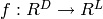
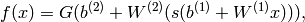
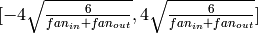

多层感知机（Multilayer Perceptron）
在本节中，假设你已经了解了使用逻辑回归进行MNIST分类。同时本节的所有代码可以在这里下载.
下一个我们将在Theano中使用的结构是单隐层的多层感知机（MLP）。MLP可以被看作一个逻辑回归分类器。这个中间层被称为隐藏层。一个单隐层对于MLP成为通用近似器是有效的。然而在后面，我们将讲述使用多个隐藏层的好处，例如深度学习的前提。这个课程介绍了MLP，反向误差传导，如何训练MLPs。
模型
一个多层感知机（或者说人工神经网络——ANN）,在只有一个隐藏层时可以被表示为如下的图：

事实上，一个单隐藏层的MLP是一个如下的函数，其中x是输入向量的维度，L是输出向量的维度。我们用下面的公式来表示MLP模型：

其中b_1，W_1是输出层到隐藏层的偏置向量和权值矩阵，s是该层的激活函数。而b_2，W_2是隐藏层到输出层的偏置向量和权值矩阵，G是该层的激活函数。通常选择s为sigmoid函数，G为softmax函数。 在训练MLP模型的参数时，我们使用minibatch的随机梯度下降，在获得梯度后使用反向误差传导算法来实现参数的训练。由于Theano提供自动的微分，我们不需要在这个教程里面谈及这个方面。
从逻辑回归到多层感知机
本教程将专注于单隐藏层的MLP。我们以隐藏层的类的实现开始，如果要构建一个MLP，只需要在此基础上添加一个逻辑回归就好。
class HiddenLayer(object):
def __init__(self, rng, input, n_in, n_out, W=None, b=None,
activation=T.tanh):
"""
Typical hidden layer of a MLP: units are fully-connected and have
sigmoidal activation function. Weight matrix W is of shape (n_in,n_out)
and the bias vector b is of shape (n_out,).
NOTE : The nonlinearity used here is tanh
Hidden unit activation is given by: tanh(dot(input,W) + b)
:type rng: numpy.random.RandomState
:param rng: a random number generator used to initialize weights
:type input: theano.tensor.dmatrix
:param input: a symbolic tensor of shape (n_examples, n_in)
:type n_in: int
:param n_in: dimensionality of input
:type n_out: int
:param n_out: number of hidden units
:type activation: theano.Op or function
:param activation: Non linearity to be applied in the hidden
layer
"""
self.input = input
一个隐藏层的权值初始化，应当从基于激活函数的均匀间隔中均匀采样。对于sigmoid函数而言，这个间隔是。其中fan_in是第（i－1）层的单元数目，fan_out是第（i）层单元的数目，结论出自这里。 这样的初始化，保证了在训练的早期，每个神经元都可以工作在它激活函数的控制范围内，从而使得信息可以更简单的前向传导（从输入到输出的激活）和后向传导（从输出到输入的梯度）。
# `W` is initialized with `W_values` which is uniformely sampled
# from sqrt(-6./(n_in+n_hidden)) and sqrt(6./(n_in+n_hidden))
# for tanh activation function
# the output of uniform if converted using asarray to dtype
# theano.config.floatX so that the code is runable on GPU
# Note : optimal initialization of weights is dependent on the
# activation function used (among other things).
# For example, results presented in [Xavier10] suggest that you
# should use 4 times larger initial weights for sigmoid
# compared to tanh
# We have no info for other function, so we use the same as
# tanh.
if W is None:
W_values = numpy.asarray(
rng.uniform(
low=-numpy.sqrt(6. / (n_in + n_out)),
high=numpy.sqrt(6. / (n_in + n_out)),
size=(n_in, n_out)
),
dtype=theano.config.floatX
)
if activation == theano.tensor.nnet.sigmoid:
W_values *= 4
W = theano.shared(value=W_values, name='W', borrow=True)
if b is None:
b_values = numpy.zeros((n_out,), dtype=theano.config.floatX)
b = theano.shared(value=b_values, name='b', borrow=True)
self.W = W
self.b = b
注意，我们通过会将一个给定的非线性函数作为隐藏层的激活函数。默认是tanh函数，当然很多时候你可能需要其他函数。
lin_output = T.dot(input, self.W) + self.b
self.output = (
lin_output if activation is None
else activation(lin_output)
)
如果你已经阅读了上面的隐藏层输出和使用逻辑回归进行MNIST分类。那么你可以看下面的MLP类的实现了。
class MLP(object):
"""Multi-Layer Perceptron Class
A multilayer perceptron is a feedforward artificial neural network model
that has one layer or more of hidden units and nonlinear activations.
Intermediate layers usually have as activation function tanh or the
sigmoid function (defined here by a ``HiddenLayer`` class) while the
top layer is a softamx layer (defined here by a ``LogisticRegression``
class).
"""
def __init__(self, rng, input, n_in, n_hidden, n_out):
"""Initialize the parameters for the multilayer perceptron
:type rng: numpy.random.RandomState
:param rng: a random number generator used to initialize weights
:type input: theano.tensor.TensorType
:param input: symbolic variable that describes the input of the
architecture (one minibatch)
:type n_in: int
:param n_in: number of input units, the dimension of the space in
which the datapoints lie
:type n_hidden: int
:param n_hidden: number of hidden units
:type n_out: int
:param n_out: number of output units, the dimension of the space in
which the labels lie
"""
# Since we are dealing with a one hidden layer MLP, this will translate
# into a HiddenLayer with a tanh activation function connected to the
# LogisticRegression layer; the activation function can be replaced by
# sigmoid or any other nonlinear function
self.hiddenLayer = HiddenLayer(
rng=rng,
input=input,
n_in=n_in,
n_out=n_hidden,
activation=T.tanh
)
# The logistic regression layer gets as input the hidden units
# of the hidden layer
self.logRegressionLayer = LogisticRegression(
input=self.hiddenLayer.output,
n_in=n_hidden,
n_out=n_out
)
在本节中，我们也使用L1/L2正则化（L1/L2正则化）。所以我们需要去计算W_1和W_2矩阵的L1正则和L2平方正则。
# L1 norm ; one regularization option is to enforce L1 norm to
# be small
self.L1 = (
abs(self.hiddenLayer.W).sum()
+ abs(self.logRegressionLayer.W).sum()
)
# square of L2 norm ; one regularization option is to enforce
# square of L2 norm to be small
self.L2_sqr = (
(self.hiddenLayer.W ** 2).sum()
+ (self.logRegressionLayer.W ** 2).sum()
)
# negative log likelihood of the MLP is given by the negative
# log likelihood of the output of the model, computed in the
# logistic regression layer
self.negative_log_likelihood = (
self.logRegressionLayer.negative_log_likelihood
)
# same holds for the function computing the number of errors
self.errors = self.logRegressionLayer.errors
# the parameters of the model are the parameters of the two layer it is
# made out of
self.params = self.hiddenLayer.params + self.logRegressionLayer.params
在此之前，我们使用minibatch的随机梯度下降来训练这个模型。不同的是，我们现在在cost函数里面添加了正则项。L1_reg和L2_reg可以控制权值矩阵的正则化。计算新cost的代码如下：
# the cost we minimize during training is the negative log likelihood of
# the model plus the regularization terms (L1 and L2); cost is expressed
# here symbolically
cost = (
classifier.negative_log_likelihood(y)
+ L1_reg * classifier.L1
+ L2_reg * classifier.L2_sqr
)
我们使用梯度来更新模型参数，这基本和逻辑回归里面的一样。我们从模型的params中获取参数列表，然后分析它，并计算每一步的梯度。
# compute the gradient of cost with respect to theta (sotred in params)
# the resulting gradients will be stored in a list gparams
gparams = [T.grad(cost, param) for param in classifier.params]
# specify how to update the parameters of the model as a list of
# (variable, update expression) pairs
# given two list the zip A = [a1, a2, a3, a4] and B = [b1, b2, b3, b4] of
# same length, zip generates a list C of same size, where each element
# is a pair formed from the two lists :
# C = [(a1, b1), (a2, b2), (a3, b3), (a4, b4)]
updates = [
(param, param - learning_rate * gparam)
for param, gparam in zip(classifier.params, gparams)
]
# compiling a Theano function `train_model` that returns the cost, but
# in the same time updates the parameter of the model based on the rules
# defined in `updates`
train_model = theano.function(
inputs=[index],
outputs=cost,
updates=updates,
givens={
x: train_set_x[index * batch_size: (index + 1) * batch_size],
y: train_set_y[index * batch_size: (index + 1) * batch_size]
}
)
把它组合起来
已经解释了所有的基本该概念，下面的代码就是一个完整的MLP类。
"""
This tutorial introduces the multilayer perceptron using Theano.
A multilayer perceptron is a logistic regressor where
instead of feeding the input to the logistic regression you insert a
intermediate layer, called the hidden layer, that has a nonlinear
activation function (usually tanh or sigmoid) . One can use many such
hidden layers making the architecture deep. The tutorial will also tackle
the problem of MNIST digit classification.
.. math::
f(x) = G( b^{(2)} + W^{(2)}( s( b^{(1)} + W^{(1)} x))),
References:
- textbooks: "Pattern Recognition and Machine Learning" -
Christopher M. Bishop, section 5
"""
__docformat__ = 'restructedtext en'
import os
import sys
import time
import numpy
import theano
import theano.tensor as T
from logistic_sgd import LogisticRegression, load_data
# start-snippet-1
class HiddenLayer(object):
def __init__(self, rng, input, n_in, n_out, W=None, b=None,
activation=T.tanh):
"""
Typical hidden layer of a MLP: units are fully-connected and have
sigmoidal activation function. Weight matrix W is of shape (n_in,n_out)
and the bias vector b is of shape (n_out,).
NOTE : The nonlinearity used here is tanh
Hidden unit activation is given by: tanh(dot(input,W) + b)
:type rng: numpy.random.RandomState
:param rng: a random number generator used to initialize weights
:type input: theano.tensor.dmatrix
:param input: a symbolic tensor of shape (n_examples, n_in)
:type n_in: int
:param n_in: dimensionality of input
:type n_out: int
:param n_out: number of hidden units
:type activation: theano.Op or function
:param activation: Non linearity to be applied in the hidden
layer
"""
self.input = input
# end-snippet-1
# `W` is initialized with `W_values` which is uniformely sampled
# from sqrt(-6./(n_in+n_hidden)) and sqrt(6./(n_in+n_hidden))
# for tanh activation function
# the output of uniform if converted using asarray to dtype
# theano.config.floatX so that the code is runable on GPU
# Note : optimal initialization of weights is dependent on the
# activation function used (among other things).
# For example, results presented in [Xavier10] suggest that you
# should use 4 times larger initial weights for sigmoid
# compared to tanh
# We have no info for other function, so we use the same as
# tanh.
if W is None:
W_values = numpy.asarray(
rng.uniform(
low=-numpy.sqrt(6. / (n_in + n_out)),
high=numpy.sqrt(6. / (n_in + n_out)),
size=(n_in, n_out)
),
dtype=theano.config.floatX
)
if activation == theano.tensor.nnet.sigmoid:
W_values *= 4
W = theano.shared(value=W_values, name='W', borrow=True)
if b is None:
b_values = numpy.zeros((n_out,), dtype=theano.config.floatX)
b = theano.shared(value=b_values, name='b', borrow=True)
self.W = W
self.b = b
lin_output = T.dot(input, self.W) + self.b
self.output = (
lin_output if activation is None
else activation(lin_output)
)
# parameters of the model
self.params = [self.W, self.b]
# start-snippet-2
class MLP(object):
"""Multi-Layer Perceptron Class
A multilayer perceptron is a feedforward artificial neural network model
that has one layer or more of hidden units and nonlinear activations.
Intermediate layers usually have as activation function tanh or the
sigmoid function (defined here by a ``HiddenLayer`` class) while the
top layer is a softamx layer (defined here by a ``LogisticRegression``
class).
"""
def __init__(self, rng, input, n_in, n_hidden, n_out):
"""Initialize the parameters for the multilayer perceptron
:type rng: numpy.random.RandomState
:param rng: a random number generator used to initialize weights
:type input: theano.tensor.TensorType
:param input: symbolic variable that describes the input of the
architecture (one minibatch)
:type n_in: int
:param n_in: number of input units, the dimension of the space in
which the datapoints lie
:type n_hidden: int
:param n_hidden: number of hidden units
:type n_out: int
:param n_out: number of output units, the dimension of the space in
which the labels lie
"""
# Since we are dealing with a one hidden layer MLP, this will translate
# into a HiddenLayer with a tanh activation function connected to the
# LogisticRegression layer; the activation function can be replaced by
# sigmoid or any other nonlinear function
self.hiddenLayer = HiddenLayer(
rng=rng,
input=input,
n_in=n_in,
n_out=n_hidden,
activation=T.tanh
)
# The logistic regression layer gets as input the hidden units
# of the hidden layer
self.logRegressionLayer = LogisticRegression(
input=self.hiddenLayer.output,
n_in=n_hidden,
n_out=n_out
)
# end-snippet-2 start-snippet-3
# L1 norm ; one regularization option is to enforce L1 norm to
# be small
self.L1 = (
abs(self.hiddenLayer.W).sum()
+ abs(self.logRegressionLayer.W).sum()
)
# square of L2 norm ; one regularization option is to enforce
# square of L2 norm to be small
self.L2_sqr = (
(self.hiddenLayer.W ** 2).sum()
+ (self.logRegressionLayer.W ** 2).sum()
)
# negative log likelihood of the MLP is given by the negative
# log likelihood of the output of the model, computed in the
# logistic regression layer
self.negative_log_likelihood = (
self.logRegressionLayer.negative_log_likelihood
)
# same holds for the function computing the number of errors
self.errors = self.logRegressionLayer.errors
# the parameters of the model are the parameters of the two layer it is
# made out of
self.params = self.hiddenLayer.params + self.logRegressionLayer.params
# end-snippet-3
def test_mlp(learning_rate=0.01, L1_reg=0.00, L2_reg=0.0001, n_epochs=1000,
dataset='mnist.pkl.gz', batch_size=20, n_hidden=500):
"""
Demonstrate stochastic gradient descent optimization for a multilayer
perceptron
This is demonstrated on MNIST.
:type learning_rate: float
:param learning_rate: learning rate used (factor for the stochastic
gradient
:type L1_reg: float
:param L1_reg: L1-norm's weight when added to the cost (see
regularization)
:type L2_reg: float
:param L2_reg: L2-norm's weight when added to the cost (see
regularization)
:type n_epochs: int
:param n_epochs: maximal number of epochs to run the optimizer
:type dataset: string
:param dataset: the path of the MNIST dataset file from
http://www.iro.umontreal.ca/~lisa/deep/data/mnist/mnist.pkl.gz
"""
datasets = load_data(dataset)
train_set_x, train_set_y = datasets[0]
valid_set_x, valid_set_y = datasets[1]
test_set_x, test_set_y = datasets[2]
# compute number of minibatches for training, validation and testing
n_train_batches = train_set_x.get_value(borrow=True).shape[0] / batch_size
n_valid_batches = valid_set_x.get_value(borrow=True).shape[0] / batch_size
n_test_batches = test_set_x.get_value(borrow=True).shape[0] / batch_size
######################
# BUILD ACTUAL MODEL #
######################
print '... building the model'
# allocate symbolic variables for the data
index = T.lscalar() # index to a [mini]batch
x = T.matrix('x') # the data is presented as rasterized images
y = T.ivector('y') # the labels are presented as 1D vector of
# [int] labels
rng = numpy.random.RandomState(1234)
# construct the MLP class
classifier = MLP(
rng=rng,
input=x,
n_in=28 * 28,
n_hidden=n_hidden,
n_out=10
)
# start-snippet-4
# the cost we minimize during training is the negative log likelihood of
# the model plus the regularization terms (L1 and L2); cost is expressed
# here symbolically
cost = (
classifier.negative_log_likelihood(y)
+ L1_reg * classifier.L1
+ L2_reg * classifier.L2_sqr
)
# end-snippet-4
# compiling a Theano function that computes the mistakes that are made
# by the model on a minibatch
test_model = theano.function(
inputs=[index],
outputs=classifier.errors(y),
givens={
x: test_set_x[index * batch_size:(index + 1) * batch_size],
y: test_set_y[index * batch_size:(index + 1) * batch_size]
}
)
validate_model = theano.function(
inputs=[index],
outputs=classifier.errors(y),
givens={
x: valid_set_x[index * batch_size:(index + 1) * batch_size],
y: valid_set_y[index * batch_size:(index + 1) * batch_size]
}
)
# start-snippet-5
# compute the gradient of cost with respect to theta (sotred in params)
# the resulting gradients will be stored in a list gparams
gparams = [T.grad(cost, param) for param in classifier.params]
# specify how to update the parameters of the model as a list of
# (variable, update expression) pairs
# given two list the zip A = [a1, a2, a3, a4] and B = [b1, b2, b3, b4] of
# same length, zip generates a list C of same size, where each element
# is a pair formed from the two lists :
# C = [(a1, b1), (a2, b2), (a3, b3), (a4, b4)]
updates = [
(param, param - learning_rate * gparam)
for param, gparam in zip(classifier.params, gparams)
]
# compiling a Theano function `train_model` that returns the cost, but
# in the same time updates the parameter of the model based on the rules
# defined in `updates`
train_model = theano.function(
inputs=[index],
outputs=cost,
updates=updates,
givens={
x: train_set_x[index * batch_size: (index + 1) * batch_size],
y: train_set_y[index * batch_size: (index + 1) * batch_size]
}
)
# end-snippet-5
###############
# TRAIN MODEL #
###############
print '... training'
# early-stopping parameters
patience = 10000 # look as this many examples regardless
patience_increase = 2 # wait this much longer when a new best is
# found
improvement_threshold = 0.995 # a relative improvement of this much is
# considered significant
validation_frequency = min(n_train_batches, patience / 2)
# go through this many
# minibatche before checking the network
# on the validation set; in this case we
# check every epoch
best_validation_loss = numpy.inf
best_iter = 0
test_score = 0.
start_time = time.clock()
epoch = 0
done_looping = False
while (epoch < n_epochs) and (not done_looping):
epoch = epoch + 1
for minibatch_index in xrange(n_train_batches):
minibatch_avg_cost = train_model(minibatch_index)
# iteration number
iter = (epoch - 1) * n_train_batches + minibatch_index
if (iter + 1) % validation_frequency == 0:
# compute zero-one loss on validation set
validation_losses = [validate_model(i) for i
in xrange(n_valid_batches)]
this_validation_loss = numpy.mean(validation_losses)
print(
'epoch %i, minibatch %i/%i, validation error %f %%' %
(
epoch,
minibatch_index + 1,
n_train_batches,
this_validation_loss * 100.
)
)
# if we got the best validation score until now
if this_validation_loss < best_validation_loss:
#improve patience if loss improvement is good enough
if (
this_validation_loss < best_validation_loss *
improvement_threshold
):
patience = max(patience, iter * patience_increase)
best_validation_loss = this_validation_loss
best_iter = iter
# test it on the test set
test_losses = [test_model(i) for i
in xrange(n_test_batches)]
test_score = numpy.mean(test_losses)
print((' epoch %i, minibatch %i/%i, test error of '
'best model %f %%') %
(epoch, minibatch_index + 1, n_train_batches,
test_score * 100.))
if patience <= iter:
done_looping = True
break
end_time = time.clock()
print(('Optimization complete. Best validation score of %f %% '
'obtained at iteration %i, with test performance %f %%') %
(best_validation_loss * 100., best_iter + 1, test_score * 100.))
print >> sys.stderr, ('The code for file ' +
os.path.split(__file__)[1] +
' ran for %.2fm' % ((end_time - start_time) / 60.))
if __name__ == '__main__':
test_mlp()
预计将会得到这样的输出：
Optimization complete. Best validation score of 1.690000 % obtained at iteration 2070000, with test performance 1.650000 %
The code for file mlp.py ran for 97.34m
在一台Intel(R) Core(TM) i7-2600K CPU @ 3.40GHz的机器上，这个代码跑了10.3 epoch/minute然后花了828 epochs得到了1.65%的测试错误率。 读者也可以在这个页面查看MNIST的识别结果。
训练MLPs的技巧
在上面的代码中国，有一些是不能进行梯度下降来优化的。严格意义上将，发现最优的超参集合是不可能的任务。第一，我们不能独立的优化每一个参数。第二，我们不能很容易的求解所有参数的梯度（有些是离散的值，有些是实数）。第三，这个优化问题是非凸的，容易陷入局部最优。 好消息是，过去25年，研究者发明了一些在神经网络中选择超参数的方法和规则。你可以在LeCun等人的Efficient BackPro中阅读，这是一个好的综述。这里，我们将总结下我们的代码中用到的几个重要的方法和技术。
非线性
最常见的就是sigmoid和tanh函数。在第4.4节中解释的，非线性是关于原点对称的，它倾向去输出0均值的输出（这是被期望的属性）。根据我们的经验，tanh(双曲函数)拥有更好的收敛性。
权值初始化
在初始化权值的时候，我们一般需要它们在0附近，要足够小（在激活函数的近似线性区域可以获得最大的梯度）。另一个特性，尤其对深度网络而言，是可以减小层与层之间的激活函数的方差和反向传导梯度的方差。这就可以让信息更好的向下和向上的传导，减少层间差异。数学推倒，请看Xavier10。
学习率
有许多文献专注在好的学习速率的选择上。最简单的方案就是选择一个固定速率。经验法则：尝试对数间隔的值(0.1，001，。。)，然后缩小（对数）网络搜索的范围（你获得最低验证错误的区域）。 随着时间的推移减小学习速率有时候也是一个好主意。一个简单的方法是使用这个公式：u/(1+d*t)，u是初始速率（可以使用上面讲的网格搜索选择），d是减小常量，用以控制学习速率，可以设为0.001或者更小，t是迭代次数或者时间。 4.7节讲述了网络中每个参数学习速率选择的方法，然后基于分类错误率自适应的选择它们。
隐藏节点数
这个超参数是非常基于数据集的。模糊的来说就是，输入分布越复杂，去模拟它的网络就需要更大的容量，那么隐藏单元的数目就要更大。事实上，一个层的权值矩阵就是可以直接度量的（输入维度＊输出维度）。 除非我们去使用正则选项（early-stopping或L1/L2惩罚），隐藏节点数和泛化表现的分布图，将呈现U型（即隐藏节点越多，在后期并不能提高泛化性）。
正则化参数
典型的方法是使用L1/L2正则化，同时lambda设为0.01，0.001等。尽管在我们之前提及的框架里面，它并没有显著提高性能，但它仍然是一个值得探讨的方法。